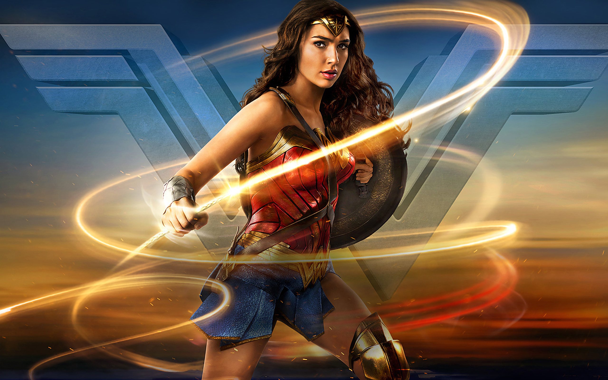

Super hero Movies
Check out the movies featuring the superhero.
Superman
1.Superman is a 1978 superhero film directed by Richard Donner and based on the DC Comics character of the same name. The film stars Christopher Reeve as Superman, Margot Kid as Lois Lane, and Gene Hackman as Lex Luthor. The film follows Superman's origin story, from his birth on the planet Krypton to his arrival on Earth and his transformation into the iconic hero. Superman must battle the evil Lex Luthor, who plans to destroy California with a nuclear missile. The film was a critical and commercial success, earning praise for its special effects, performances, and score by John Williams. Superman was followed by three sequels, Superman II, Superman III, and Superman IV: The Quest for Peace, as well as a spin-off film, Supergirl.

2. Superman Returns
Superman Returns is a 2006 superhero film directed by Bryan Singer and starring Brandon Routh as Superman, Kate Bosworth as Lois Lane, and Kevin Spacey as Lex Luthor. The film is set in the same continuity as the original Superman films and serves as a sequel to Superman II. Superman returns to Earth after a five-year absence to find that Lois Lane has moved on with her life and has a son. Meanwhile, Lex Luthor hatches a plan to create a new continent using Kryptonian crystals, putting the world in danger. Superman must save the day and win back Lois's heart. Superman Returns received mixed reviews from critics but was praised for its visual effects and Routh's performance as Superman.
3. Wonder woman
The Wonder Woman movies, starring Gal Gadot, bring the iconic DC Comics heroine to life in two distinct yet connected stories. The first film, Wonder Woman (2017), directed by Patty Jenkins, is set during World War I and follows Diana, an Amazonian warrior princess, as she leaves her hidden island of Themyscira to stop the war and defeat Ares, the god of war. Alongside Steve Trevor, she discovers the strength of humanity and her own divine powers. The film was a critical and commercial success, praised for its action sequences, performances, and themes of love and heroism.
4. Wonder Woman 1984
The sequel, Wonder Woman 1984 (2020), shifts to the Cold War era, where Diana faces new challenges, including the return of Steve under mysterious circumstances and the emergence of villains Maxwell Lord and Cheetah. This film explores themes of desire, sacrifice, and truth, as Diana learns the cost of wishing for what she has lost. Both movies showcase her evolution as a hero, blending action, mythology, and heartfelt storytelling while emphasizing Wonder Woman’s enduring message of hope, love, and justice.